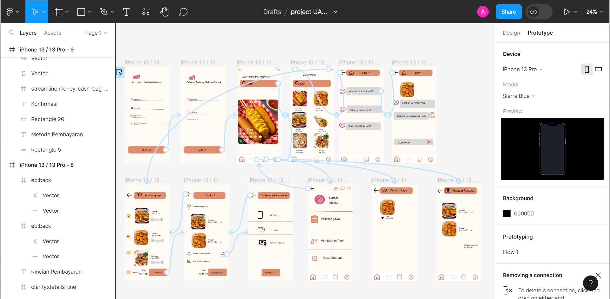
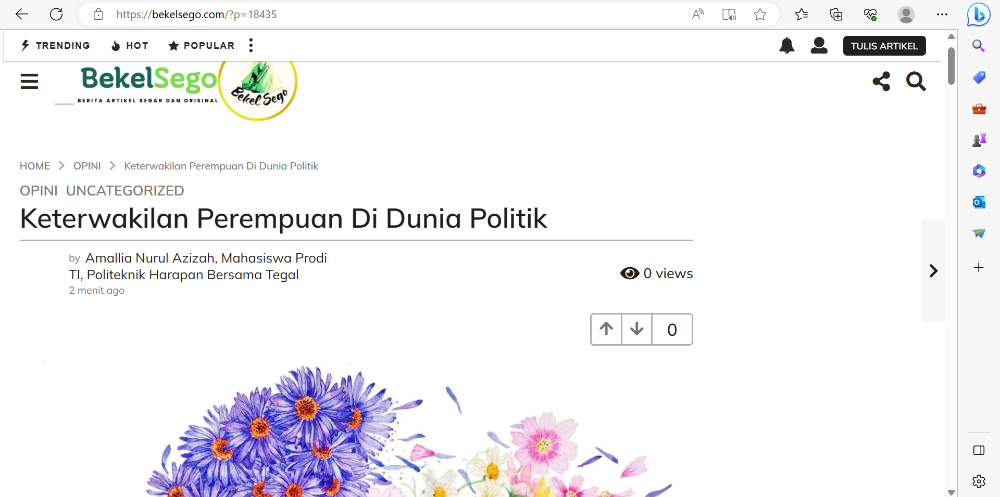

Saya merupakan seorang mahasiswi di politeknik harapan bersama Tegal jurusan teknik informatika, umur saya 20 tahun, saya berdomisili di Brebes.
Saat ini saya sedang mempelajari html web, UI/UX Design, data analis, bahasa pemrograman java, bahasa pemrograman python.
Skill saya untuk saat ini adalah membuat html web dengan css dan UI.UX Design.
Pengalaman saya adalah membuat UI/UX Design, Python Fundamental dan menulis artikel.
Saya menyukai Design, saya suka jalan-jalan naik motor tanpa arah, saya juga suka mendengarkan musik di spotify walau banyak iklan.
Goal saya di hidup ini adalah ingin membahagiakan orang tua, ingin menaikan derajat orang tua.
Saya ingin menjadi data analyst dan seorang UI/UX Design.
UI/UX Design
 prtototype UI/UXMenulis artikel
 keterwakilan perempuan di dunia politikHubungi kami untuk informasi lebih lanjut:
Email: amallianurulaz@gmail.com
WhatsApp: 0858-0346-0471
Instagram: amallianaa
Linkedin: Amallia Nurul Azizah
github